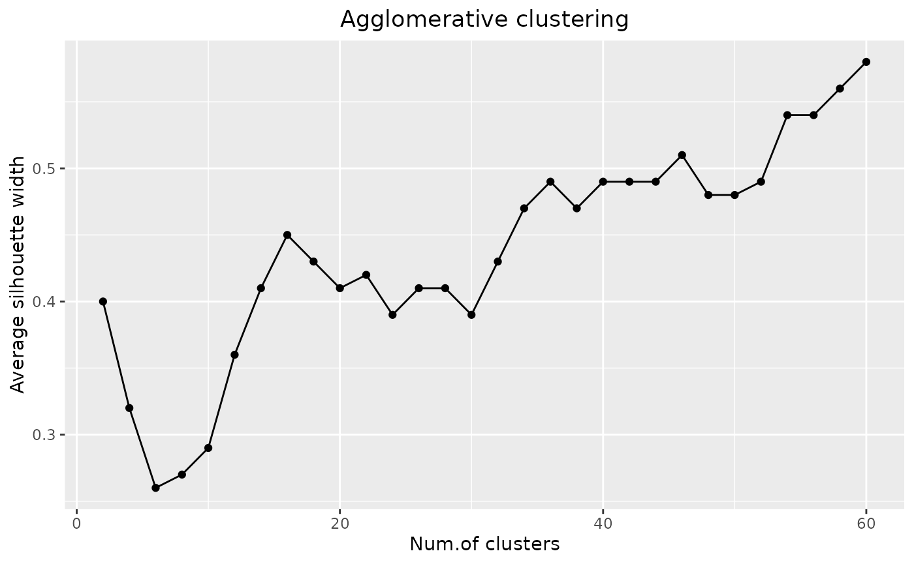
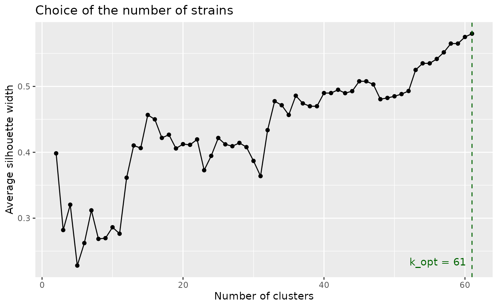
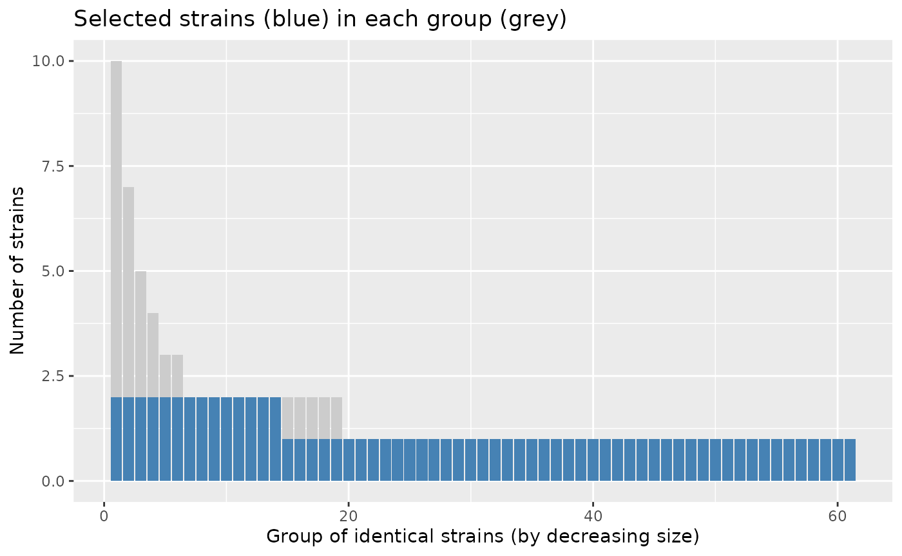
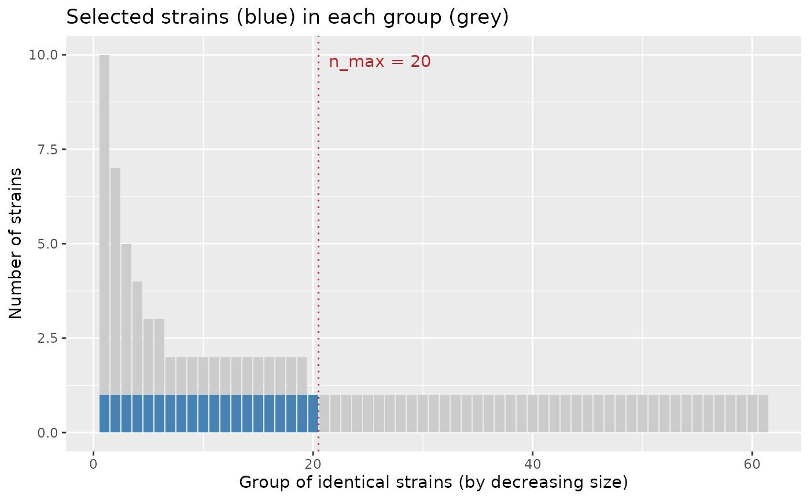
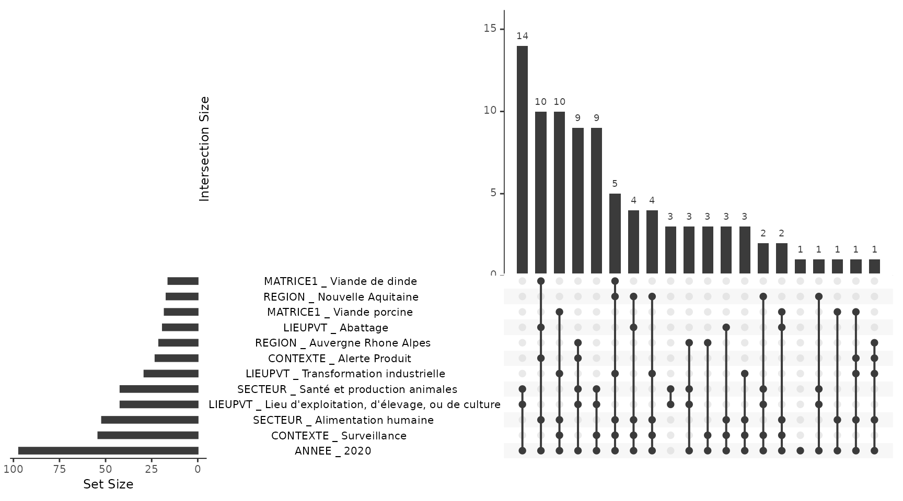

Overview
{strainselect} helps choosing which bacterial strains to sequence from a collection described by metadata (sampling context, matrix, region, sector, year…). It offers two complementary methods:
- the clustering method (
assess_gower(),cstats_table(),select_silhouette()) is suited when the number of strains that can be sequenced is limited. Strains are grouped into k clusters of similar strains and the best clustered strain of each cluster is selected, so that the selected strains are as different as possible from each other; - the profile method (
prepare_upset(),define_profiles(),select_profiles()) is suited when the number of strains to sequence is not limited. Strains sharing exactly the same metadata are grouped and one strain per group is selected, so that every distinct profile — including unique strains — is represented.
Both methods start with prepare_input(), which cleans
the raw table.
The examples below use salmonella_strains, a table of
100 Salmonella strains described by 22 variables, shipped with
the package. The selection is based on 6 variables:
CONTEXTE, MATRICE1, REGION,
SECTEUR, LIEUPVT and the year extracted from
DATE_PRELEVEMENT.
Example data: salmonella_strains
salmonella_strains is available as soon as the package
is loaded. The same table is also shipped as a CSV file (;
separator), which shows the expected format of an input file:
system.file("data_test.csv", package = "strainselect").
str(salmonella_strains[, c("IDENTIFIANT", "CONTEXTE", "REGION", "DATE_PRELEVEMENT")])
#> 'data.frame': 100 obs. of 4 variables:
#> $ IDENTIFIANT : chr "2020LSAL00151" "2020LSAL00152" "2020LSAL00163" "2020LSAL00167" ...
#> $ CONTEXTE : chr "Surveillance" "Surveillance" "Surveillance" "Surveillance" ...
#> $ REGION : chr "Auvergne Rhone Alpes" "Auvergne Rhone Alpes" "Nouvelle Aquitaine" "Occitanie" ...
#> $ DATE_PRELEVEMENT: chr "09/01/2020" "09/01/2020" "07/01/2020" "14/01/2020" ...Preparing the data: prepare_input
Before using any of the methods, the dataset must be cleaned and
contain only the metadata on which the selection is based.
prepare_input():
- checks that strain identifiers are unique (and stops with the list of duplicated identifiers otherwise);
- uses the identifiers as row names;
- keeps only the selected metadata columns;
- optionally extracts the year (
ANNEE) and/or the month (MOIS) from a date column; - replaces missing values by
"unknown"and converts every column to a factor.
Columns can be given by their names (recommended, as it is easier to
read and does not depend on the order of the columns) or by their
positions. Dates are read with date_format,
"%d/%m/%Y" (e.g. 09/01/2020) by default; use
for instance date_format = "%Y-%m-%d" for dates such as
2020-01-09. A date column already of class
Date is used as is.
raw_data <- salmonella_strains
prepared_data <- prepare_input(
raw_data,
col_select = c("CONTEXTE", "MATRICE1", "REGION", "SECTEUR", "LIEUPVT"),
id = "IDENTIFIANT", date = "DATE_PRELEVEMENT", month = FALSE, year = TRUE
)
#> no duplicate ID
#> selected metadata: CONTEXTE, MATRICE1, REGION, SECTEUR, LIEUPVT, ANNEE
head(prepared_data)
#> CONTEXTE MATRICE1 REGION
#> 2020LSAL00151 Surveillance non spécifié Auvergne Rhone Alpes
#> 2020LSAL00152 Surveillance non spécifié Auvergne Rhone Alpes
#> 2020LSAL00163 Surveillance Viande de canard Nouvelle Aquitaine
#> 2020LSAL00167 Surveillance Viande de canard Occitanie
#> 2020LSAL00176 Surveillance Gallus gallus Nouvelle Aquitaine
#> 2020LSAL00177 Surveillance Dindes Bretagne
#> SECTEUR
#> 2020LSAL00151 Eco-système
#> 2020LSAL00152 Eco-système
#> 2020LSAL00163 Alimentation humaine
#> 2020LSAL00167 Alimentation humaine
#> 2020LSAL00176 Santé et production animales
#> 2020LSAL00177 Santé et production animales
#> LIEUPVT ANNEE
#> 2020LSAL00151 Source/captage de l'eau 2020
#> 2020LSAL00152 Source/captage de l'eau 2020
#> 2020LSAL00163 Transformation industrielle 2020
#> 2020LSAL00167 Transformation industrielle 2020
#> 2020LSAL00176 Lieu d'exploitation, d'élevage, ou de culture 2020
#> 2020LSAL00177 Lieu d'exploitation, d'élevage, ou de culture 2020
# the same with column positions
prepared_data <- prepare_input(raw_data, col_select = c(5, 8, 11, 12, 15, 22),
id = 1, date = 15)
#> no duplicate ID
#> selected metadata: CONTEXTE, MATRICE1, REGION, SECTEUR, LIEUPVT, ANNEEClustering method
The clustering method uses three functions:
assess_gower(), cstats_table() and
select_silhouette(). cstats_table() is
optional when the number of strains to sequence is fixed in advance.
Distances and tree: assess_gower
assess_gower() computes a dissimilarity matrix between
strains using the Gower distance, which is suited to categorical
metadata. Weights can be given to the metadata to adjust their
importance in the clustering. A hierarchical clustering with complete
linkage is then performed on this matrix, and the dendrogram is drawn
when graph = TRUE.
raw_data <- salmonella_strains
prepared_data <- prepare_input(raw_data, col_select = c("CONTEXTE", "MATRICE1", "REGION", "SECTEUR", "LIEUPVT"),
id = "IDENTIFIANT", date = "DATE_PRELEVEMENT")
#> no duplicate ID
#> selected metadata: CONTEXTE, MATRICE1, REGION, SECTEUR, LIEUPVT, ANNEE
gower <- assess_gower(prepared_data, graph = TRUE)Choosing the number of clusters: cstats_table
cstats_table() computes clustering statistics (see
fpc::cluster.stats()) for an increasing number of clusters:
step, 2 * step, …, up to k. The
average silhouette width (avg.silwidth) is the most useful
one: it is plotted against the number of clusters, and the optimal
number of clusters is marked by a maximum or a plateau of the curve. The
idea is to test a large number of clusters without exceeding the number
of strains that can be sequenced; a larger step reduces the
computing time.
raw_data <- salmonella_strains
prepared_data <- prepare_input(raw_data, col_select = c("CONTEXTE", "MATRICE1", "REGION", "SECTEUR", "LIEUPVT"),
id = "IDENTIFIANT", date = "DATE_PRELEVEMENT")
#> no duplicate ID
#> selected metadata: CONTEXTE, MATRICE1, REGION, SECTEUR, LIEUPVT, ANNEE
gower <- assess_gower(prepared_data, graph = FALSE)
stats <- cstats_table(dist = gower$gower_dist, tree = gower$aggl.clust.c,
k = 60, step = 2)
#> testing 2 clusters
#> testing 4 clusters
#> testing 6 clusters
#> testing 8 clusters
#> testing 10 clusters
#> testing 12 clusters
#> testing 14 clusters
#> testing 16 clusters
#> testing 18 clusters
#> testing 20 clusters
#> testing 22 clusters
#> testing 24 clusters
#> testing 26 clusters
#> testing 28 clusters
#> testing 30 clusters
#> testing 32 clusters
#> testing 34 clusters
#> testing 36 clusters
#> testing 38 clusters
#> testing 40 clusters
#> testing 42 clusters
#> testing 44 clusters
#> testing 46 clusters
#> testing 48 clusters
#> testing 50 clusters
#> testing 52 clusters
#> testing 54 clusters
#> testing 56 clusters
#> testing 58 clusters
#> testing 60 clusters
With a small step (here every 2 clusters), the curve shows two plateaus. The average silhouette width jumps to about 0.45 at 16 clusters and then stays between 0.39 and 0.43 up to 30 clusters: about 15 clusters is a first level that already captures the main structure of the collection. It jumps again to about 0.47 at 34 clusters and stays between 0.47 and 0.51 up to 52 clusters: about 33 clusters is a second, finer level. Beyond, the curve increases up to the number of distinct profiles (61), where every profile is isolated: with categorical metadata, this maximum is not a natural level of grouping. The number of strains to sequence can be chosen at one of the two plateaus, depending on the resources available.
Selecting the strains: select_silhouette
The last step selects one strain to sequence in each cluster. The
number of clusters k is either chosen from the silhouette
plot or set to the number of strains that can be sequenced. For each
cluster, the strain with the largest silhouette width — i.e. the best
clustered strain — is selected. When several strains share the largest
silhouette width in a cluster, one of them is chosen at random; use
seed to make this choice reproducible.
raw_data <- salmonella_strains
prepared_data <- prepare_input(raw_data, col_select = c("CONTEXTE", "MATRICE1", "REGION", "SECTEUR", "LIEUPVT"),
id = "IDENTIFIANT", date = "DATE_PRELEVEMENT")
#> no duplicate ID
#> selected metadata: CONTEXTE, MATRICE1, REGION, SECTEUR, LIEUPVT, ANNEE
gower <- assess_gower(prepared_data, graph = FALSE)
selection <- select_silhouette(prepared_data, dist = gower$gower_dist, k = 20,
seed = 1)
# the 20 strains to sequence
unique(selection$selected)
#> [1] "2020LSAL00802" "2020LSAL00487" "2020LSAL00177" "2020LSAL00854"
#> [5] "2020LSAL00454" "2020LSAL00720" "2020LSAL00506" "2020LSAL00550"
#> [9] "2020LSAL00660" "2020LSAL00668" "2020LSAL00724" "2020LSAL00790"
#> [13] "2020LSAL00912" "2020LSAL00792" "2020LSAL00866" "2020LSAL00892"
#> [17] "2020LSAL01016" "2020LSAL00994" "2020LSAL01040" "2020LSAL01188"Selecting strains for a sequencing budget: select_strains
select_strains() runs the whole clustering method in one
step and answers the practical question “I can sequence at most
n_max strains: which ones?”.
- It computes the Gower distances and the clustering tree (as
assess_gower()), then the average silhouette width for every number of clusters from 2 to the number of distinct profiles. The number of clusters with the largest average silhouette width is the optimal number of clustersk_opt. - It selects the strains according to the budget
n_max:- no budget (
n_max = NULL): one strain per optimal cluster, i.e.k_optstrains, with the status"optimal"; - budget larger than the optimum (
n_max >= k_opt): thek_optoptimal strains, completed up ton_maxstrains (status"supplementary") by cutting the tree inton_maxclusters. Usefill = FALSEto stop at the optimum. As the clusters are nested, each supplementary strain comes from a cluster that does not contain an optimal strain yet; - budget smaller than the optimum (
n_max < k_opt): the tree is cut inton_maxclusters and one strain is selected in each (status"selected"). The optimal groups that are not represented by any selected strain are listed, so that the user knows what is missed.
- no budget (
In each cluster, the selected strain is the one with the largest
silhouette width, i.e. the best clustered one (ties are broken at
random, use seed for reproducibility).
With categorical metadata and equal weights, identical strains are at
distance 0 and the optimum is often close to the number of distinct
profiles: supplementary strains then mostly have the same metadata as
already selected strains, and add replicates rather than diversity. This
is not a general rule. The weights change the Gower distances between
different strains, hence the tree, the silhouette curve and the optimum
(in the example of this vignette, a weight of 3 on REGION
lowers the optimum from 61 to 22 clusters), and supplementary strains
can then add new profiles. Conversely, below the optimum, the strains of
a cluster are similar but not identical. The report written by
report_selection() gives, for the actual data, the number
of supplementary strains that have the same metadata as an already
selected strain, and how much the strains differ from the selected
strain of their cluster.
select_strains(method = "profile") applies the same
logic to the profile method. The strains with identical metadata form
groups, sorted by decreasing size (groups of the same size in random
order); one strain per group is the optimal selection:
- budget smaller than the number of groups: one strain in each of the
n_maxlargest groups — the most frequent profiles are favoured, and the smallest groups (often strains with a unique profile) are listed as not represented; - budget larger than the number of groups: one strain per group, then supplementary strains added turn by turn — a second strain in each group that has one, from the largest group to the smallest, then a third strain, and so on.
Within a group, the strains have the same metadata and are chosen at
random (use seed for reproducibility).
prepared_data <- prepare_input(
salmonella_strains,
col_select = c("CONTEXTE", "MATRICE1", "REGION", "SECTEUR", "LIEUPVT"),
id = "IDENTIFIANT", date = "DATE_PRELEVEMENT"
)
#> no duplicate ID
#> selected metadata: CONTEXTE, MATRICE1, REGION, SECTEUR, LIEUPVT, ANNEE
# clustering method, no budget: optimal number of strains
res <- select_strains(prepared_data, seed = 1)
res
#> Strain selection (clustering method)
#> strains: 100 - distinct profiles: 61
#> optimal number of clusters (k_opt): 61
#> maximum number of strains (n_max): not given
#> selected strains: 61 (optimal: 61)
plot(res)
# budget smaller than the optimum
res_20 <- select_strains(prepared_data, n_max = 20, seed = 1)
res_20
#> Strain selection (clustering method)
#> strains: 100 - distinct profiles: 61
#> optimal number of clusters (k_opt): 61
#> maximum number of strains (n_max): 20
#> selected strains: 20 (selected: 20)
#> optimal groups not represented: 41 out of 61
head(res_20$table[, c("cluster", "optimal_group", "selected", "status")])
#> cluster optimal_group selected status
#> 2020LSAL00151 1 1 FALSE not selected
#> 2020LSAL00152 1 1 FALSE not selected
#> 2020LSAL00163 2 2 FALSE not selected
#> 2020LSAL00167 2 3 FALSE not selected
#> 2020LSAL00176 3 4 FALSE not selected
#> 2020LSAL00177 3 5 TRUE selected
# profile method, budget larger than the number of distinct profiles
res_profile <- select_strains(prepared_data, n_max = 75, method = "profile", seed = 1)
res_profile
#> Strain selection (profile method)
#> strains: 100 - distinct profiles: 61
#> groups of identical strains: 61
#> maximum number of strains (n_max): 75
#> selected strains: 75 (optimal: 61, supplementary: 14)
plot(res_profile)
head(res_profile$groups)
#> group size n_selected
#> 1 1 10 2
#> 2 2 7 2
#> 3 3 5 2
#> 4 4 4 2
#> 5 5 3 2
#> 6 6 3 2
#> profile
#> 1 Alerte Produit | Viande de dinde | Pays de la Loire | Alimentation humaine | Abattage | 2020
#> 2 Alerte Produit | Bovins | Auvergne Rhone Alpes | Santé et production animales | Lieu d'exploitation, d'élevage, ou de culture | 2020
#> 3 Surveillance | Viande de dinde | Nouvelle Aquitaine | Alimentation humaine | Transformation industrielle | 2020
#> 4 Surveillance | Viande porcine | Provence Alpes Cote d Azur | Alimentation humaine | Transformation industrielle | 2020
#> 5 Programmes de contrôle et d'éradication | Gallus gallus | Bretagne | Santé et production animales | Lieu d'exploitation, d'élevage, ou de culture | 2020
#> 6 Surveillance | Viande de canard | Nouvelle Aquitaine | Alimentation humaine | Abattage | 2020
# profile method, budget smaller than the number of distinct profiles:
# one strain in each of the 20 largest groups
res_profile_20 <- select_strains(prepared_data, n_max = 20, method = "profile", seed = 1)
plot(res_profile_20)
Exporting the result: export_selection
export_selection() returns — and optionally writes to a
CSV file — the original metadata table with the columns added by
select_strains(). The file can be opened in a spreadsheet
and filtered on selected to get the list of strains to
sequence.
prepared_data <- prepare_input(
salmonella_strains,
col_select = c("CONTEXTE", "MATRICE1", "REGION", "SECTEUR", "LIEUPVT"),
id = "IDENTIFIANT", date = "DATE_PRELEVEMENT"
)
#> no duplicate ID
#> selected metadata: CONTEXTE, MATRICE1, REGION, SECTEUR, LIEUPVT, ANNEE
res <- select_strains(prepared_data, n_max = 20, seed = 1)
selection <- export_selection(res, data = salmonella_strains, id = "IDENTIFIANT")
# the strains to sequence, with all their metadata
head(selection[selection$selected, c("IDENTIFIANT", "REGION", "status")])
#> IDENTIFIANT REGION status
#> 6 2020LSAL00177 Bretagne selected
#> 14 2020LSAL00454 Hauts de France selected
#> 20 2020LSAL00487 Ile de France selected
#> 22 2020LSAL00506 <NA> selected
#> 27 2020LSAL00549 Provence Alpes Cote d Azur selected
#> 36 2020LSAL00660 Occitanie selected
# write the table to a CSV file
export_selection(res, data = salmonella_strains, id = "IDENTIFIANT",
file = file.path(tempdir(), "selection.csv"))
#> selection written to /tmp/RtmpUbHB2w/selection.csvReporting: report_selection
report_selection() writes an HTML report of the
selection: the parameters, the silhouette curve with the optimum and the
budget, the list of the selected strains, the optimal groups that are
not represented and the size of each cluster. Together with the CSV file
of export_selection(), it documents the choice of the
strains to sequence.
prepared_data <- prepare_input(
salmonella_strains,
col_select = c("CONTEXTE", "MATRICE1", "REGION", "SECTEUR", "LIEUPVT"),
id = "IDENTIFIANT", date = "DATE_PRELEVEMENT"
)
#> no duplicate ID
#> selected metadata: CONTEXTE, MATRICE1, REGION, SECTEUR, LIEUPVT, ANNEE
res <- select_strains(prepared_data, n_max = 20, seed = 1)
if (requireNamespace("rmarkdown", quietly = TRUE) && rmarkdown::pandoc_available()) {
report_selection(res, file = file.path(tempdir(), "selection.html"),
data = salmonella_strains, id = "IDENTIFIANT")
}
#> selection written to /tmp/RtmpUbHB2w/selection.csv
#> report written to /tmp/RtmpUbHB2w/selection.htmlProfile method
This method groups strains that are strictly identical for all the
selected metadata, and selects one strain per group. Unlike the
clustering method, all strains of a group are identical, and strains
that are similar to no other strain form a group on their own. It uses
three functions: prepare_upset(),
define_profiles() and select_profiles().
Binary table: prepare_upset
prepare_upset() creates a binary table from the prepared
data: there is one column per modality of each metadata (named
<metadata> _ <modality>), filled with 1 if the
strain has this modality and 0 otherwise.
raw_data <- salmonella_strains
prepared_data <- prepare_input(raw_data, col_select = c("CONTEXTE", "MATRICE1", "REGION", "SECTEUR", "LIEUPVT"),
id = "IDENTIFIANT", date = "DATE_PRELEVEMENT")
#> no duplicate ID
#> selected metadata: CONTEXTE, MATRICE1, REGION, SECTEUR, LIEUPVT, ANNEE
upset_data <- prepare_upset(prepared_data)
upset_data[1:5, 1:4]
#> CONTEXTE _ Surveillance CONTEXTE _ Alerte Produit
#> 2020LSAL00151 1 0
#> 2020LSAL00152 1 0
#> 2020LSAL00163 1 0
#> 2020LSAL00167 1 0
#> 2020LSAL00176 1 0
#> CONTEXTE _ Programmes de contrôle et d'éradication
#> 2020LSAL00151 0
#> 2020LSAL00152 0
#> 2020LSAL00163 0
#> 2020LSAL00167 0
#> 2020LSAL00176 0
#> CONTEXTE _ Etudes cliniques
#> 2020LSAL00151 0
#> 2020LSAL00152 0
#> 2020LSAL00163 0
#> 2020LSAL00167 0
#> 2020LSAL00176 0The binary table can be used to visualise the groups of identical strains in an UpSet plot, for instance with the {UpSetR} package:
# the 12 most frequent modalities
UpSetR::upset(upset_data, nsets = 12, order.by = "freq", nintersects = 20,
mb.ratio = c(0.55, 0.45), text.scale = 1.1)
#> Warning: `aes_string()` was deprecated in ggplot2 3.0.0.
#> ℹ Please use tidy evaluation idioms with `aes()`.
#> ℹ See also `vignette("ggplot2-in-packages")` for more information.
#> ℹ The deprecated feature was likely used in the UpSetR package.
#> Please report the issue at <https://github.com/hms-dbmi/UpSetR/issues>.
#> This warning is displayed once per session.
#> Call `lifecycle::last_lifecycle_warnings()` to see where this warning was
#> generated.
#> Warning: Using `size` aesthetic for lines was deprecated in ggplot2 3.4.0.
#> ℹ Please use `linewidth` instead.
#> ℹ The deprecated feature was likely used in the UpSetR package.
#> Please report the issue at <https://github.com/hms-dbmi/UpSetR/issues>.
#> This warning is displayed once per session.
#> Call `lifecycle::last_lifecycle_warnings()` to see where this warning was
#> generated.
#> Warning: The `size` argument of `element_line()` is deprecated as of ggplot2 3.4.0.
#> ℹ Please use the `linewidth` argument instead.
#> ℹ The deprecated feature was likely used in the UpSetR package.
#> Please report the issue at <https://github.com/hms-dbmi/UpSetR/issues>.
#> This warning is displayed once per session.
#> Call `lifecycle::last_lifecycle_warnings()` to see where this warning was
#> generated.
Groups of identical strains: define_profiles
define_profiles() builds a profile for each strain by
concatenating the columns of the binary table. Strains with identical
profiles are put in the same group; a profile shared by no other strain
forms a group with a single strain.
raw_data <- salmonella_strains
prepared_data <- prepare_input(raw_data, col_select = c("CONTEXTE", "MATRICE1", "REGION", "SECTEUR", "LIEUPVT"),
id = "IDENTIFIANT", date = "DATE_PRELEVEMENT")
#> no duplicate ID
#> selected metadata: CONTEXTE, MATRICE1, REGION, SECTEUR, LIEUPVT, ANNEE
upset_data <- prepare_upset(prepared_data)
upset_profiles <- define_profiles(upset_data)
# number of distinct profiles
max(upset_profiles$group)
#> [1] 61Selecting the strains: select_profiles
Finally, select_profiles() selects one strain per group.
A group containing a single strain gets this strain; since all strains
of a larger group are identical, one of them is chosen at random. Use
seed to make the selection reproducible.
raw_data <- salmonella_strains
prepared_data <- prepare_input(raw_data, col_select = c("CONTEXTE", "MATRICE1", "REGION", "SECTEUR", "LIEUPVT"),
id = "IDENTIFIANT", date = "DATE_PRELEVEMENT")
#> no duplicate ID
#> selected metadata: CONTEXTE, MATRICE1, REGION, SECTEUR, LIEUPVT, ANNEE
upset_profiles <- define_profiles(prepare_upset(prepared_data))
selection <- select_profiles(upset_profiles, prepared_data, seed = 1)
# one strain per distinct profile
length(unique(selection$selected))
#> [1] 61